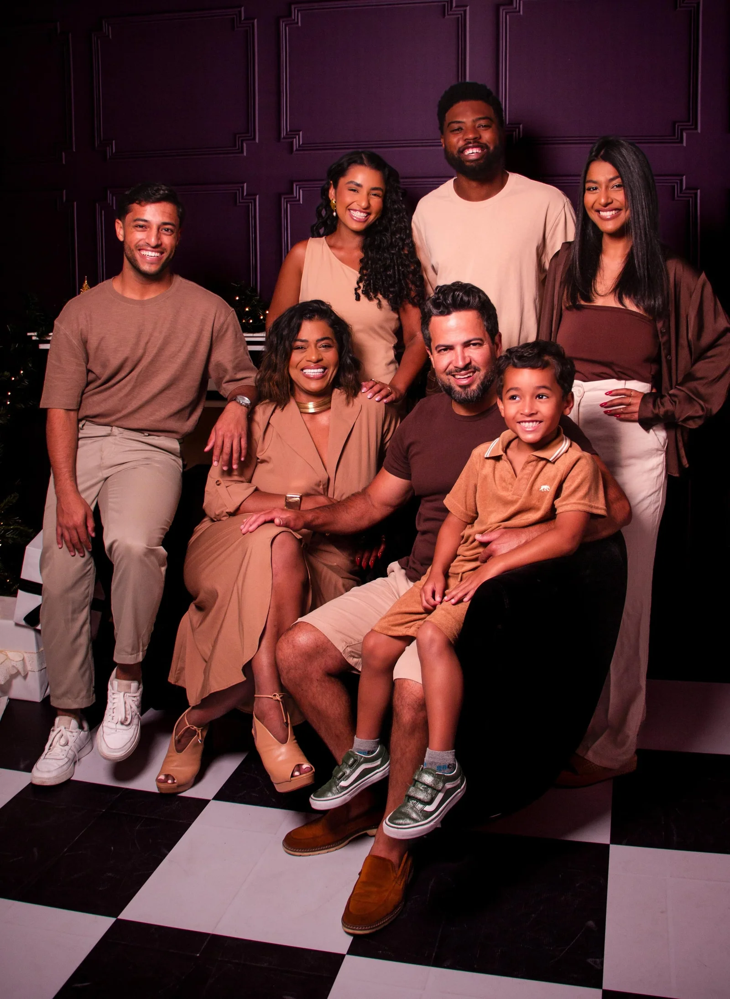
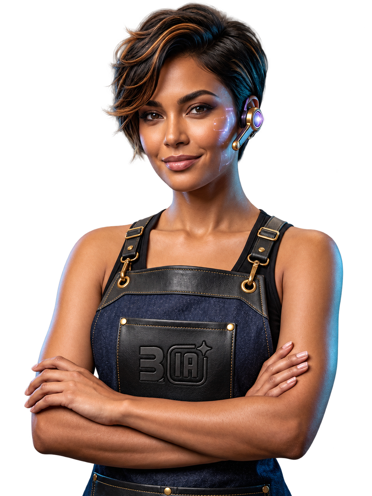
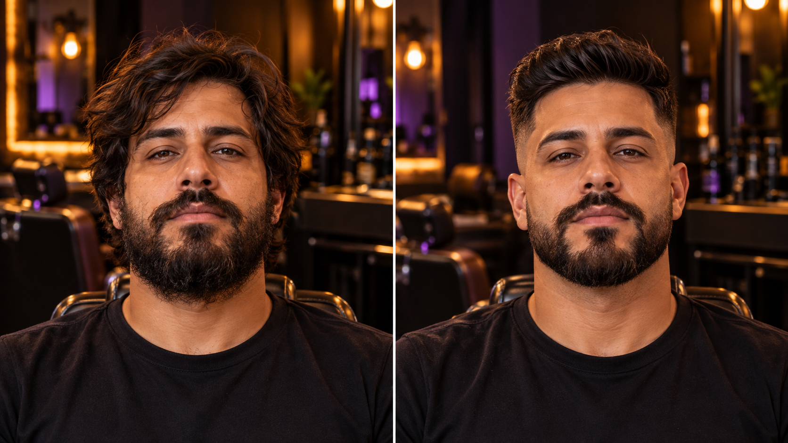
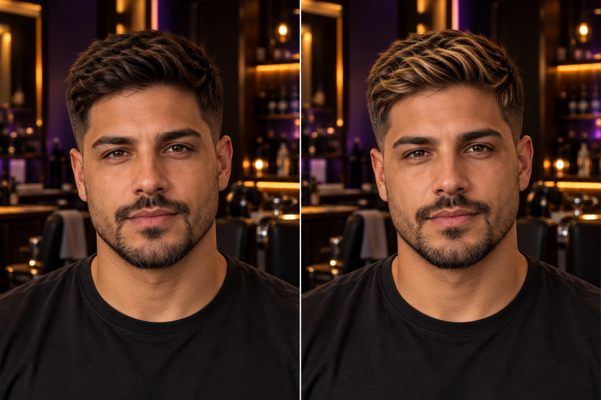
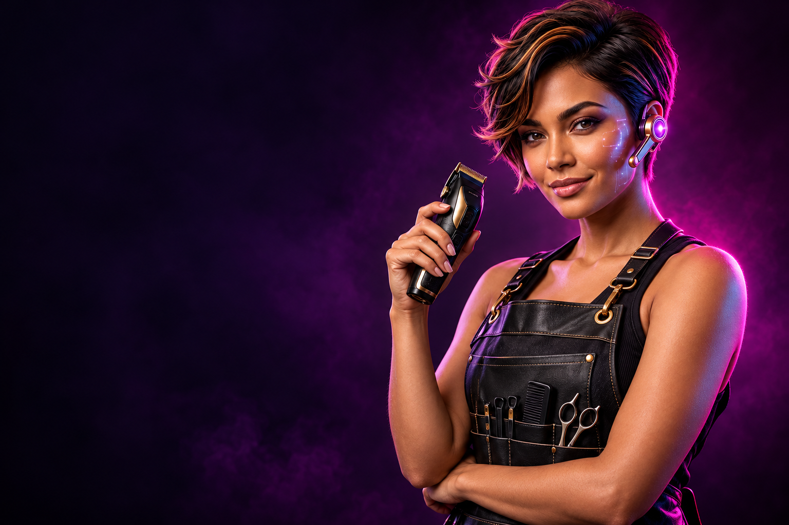

O tempo de uma mulher que empreende.
Por: Rose Barone
Por: Rose Barone
A PERGUNTA QUE ME ACOMPANHA
Talvez você também já tenha terminado o dia com essa sensação.
TODOS NÓS TEMOS
Mas nem todo mundo vive
o mesmo dia.
EU SOU A ROSE
E cada um deles importa para mim.

A MINHA HISTÓRIA
Hoje, esses sonhos fazem parte da minha vida.
QUANDO OS SONHOS CRESCEM
Muitas responsabilidades, uma só pessoa.
NOS BASTIDORES
Antes de cada entrega, existem decisões, conversas e responsabilidades.
A SENSAÇÃO
Cada prato representa algo que importa.
QUEM EMPREENDE CONHECE
QUERO OUVIR VOCÊS
Levanta a mão.
UMA REFLEXÃO
O seu tempo e o seu bem-estar também importam.
MAIS DO QUE UMA AGENDA CHEIA
Estar no lugar em que escolhemos estar, com atenção de verdade.
A MINHA VIRADA
“O que só eu posso fazer? E no que eu posso receber ajuda?”
A RESPOSTA NÃO PRECISA SER IGUAL PARA TODOS
UMA ESCOLHA
Crescer exige encontrar outras formas de fazer as coisas.
OLHE PARA A SUA ROTINA
Pense em uma tarefa que se repete e que poderia receber apoio.
AGORA É COM VOCÊ
Pense por alguns segundos.
UMA CONVERSA SINCERA
Mas podemos escolher melhor onde nossa energia é necessária.
POR TRÁS DESTE ENCONTRO
As conversas, os detalhes e o cuidado com cada pessoa também fazem parte da experiência.
FOI ENTÃO QUE EU PENSEI
Quem aqui gostaria de se clonar?
A MINHA ESCOLHA
E foi dessa necessidade que uma nova ideia começou a ganhar forma.
E É AQUI QUE ELA ENTRA
Uma assistente criada para apoiar conversas e a rotina do negócio.

COM A PALAVRA
Uma conversa sobre como ela pode ajudar no seu negócio.
Vídeo indisponível. A Rose pode continuar a apresentação.
NO WHATSAPP
“Quero saber mais sobre o curso.”
“Vou te mostrar as informações.”
O SEU NEGÓCIO, SUAS INFORMAÇÕES
PENSADA PARA A SUA ROTINA
A ROTINA DA BARBEARIA
PARA QUEM ENSINA
MAIS DO SEU NEGÓCIO EM UM SÓ LUGAR
O QUE PODE VIR PELA FRENTE
Explorar sugestões visuais para apoiar o olhar do profissional.

O QUE PODE VIR PELA FRENTE
Explorar cores e referências para apoiar o trabalho do profissional.

LANÇAMENTO EXCLUSIVO // 01 DE DEZEMBRO
Para assegurar máxima estabilidade, nossa equipe de engenharia realiza o provisionamento individual de infraestrutura e calibração de IA para a sua barbearia.
Liberação oficial de acessos e chaves: 01 de Dezembro.CONDIÇÃO DE CLIENTE FUNDADOR
Taxa mensal promocional garantida por 12 meses para o lote de fundadores presenciais.
PLANO BARBEARIA // R$ 199 / MÊS

PLANO EDUCADOR // R$ 299 / MÊS
PLANO HÍBRIDO // R$ 449 / MÊS
R$ 449 / mês
O CONTRASTE FINANCEIRO
ONBOARDING SIMPLES // ZERO DIFICULDADE
Vídeos curtos e objetivos dentro da plataforma ensinando exatamente onde cadastrar cada serviço, profissional e horário em poucos minutos.
Configuração autônoma, intuitiva e sem atrito.LOTE FUNDADOR EXCLUSIVO
Aponte a câmera, garanta seu lote de Cliente Fundador e receba sua confirmação oficial no WhatsApp.
biabarber.com.br
Rose Barone